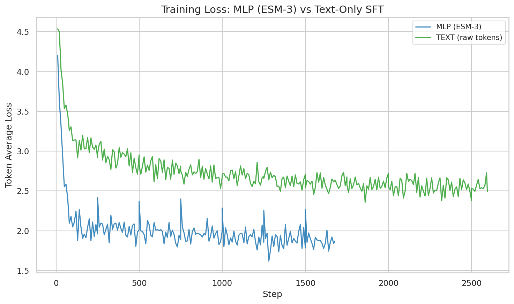
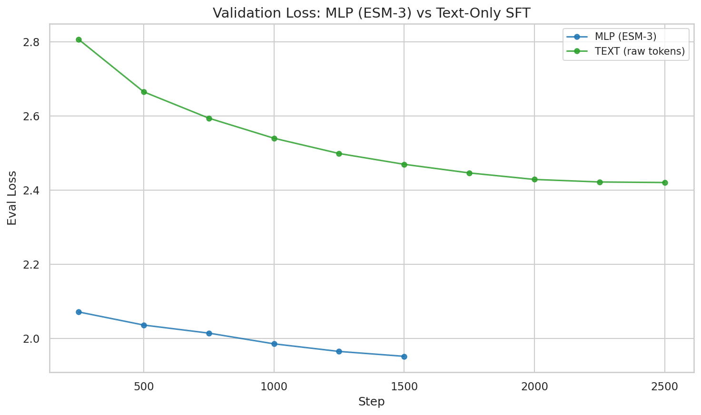
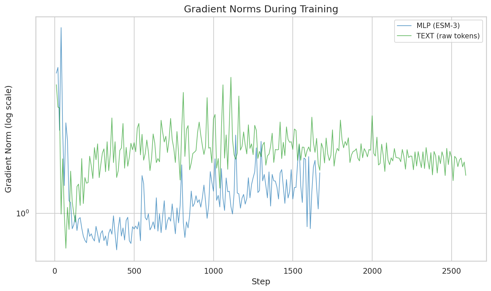
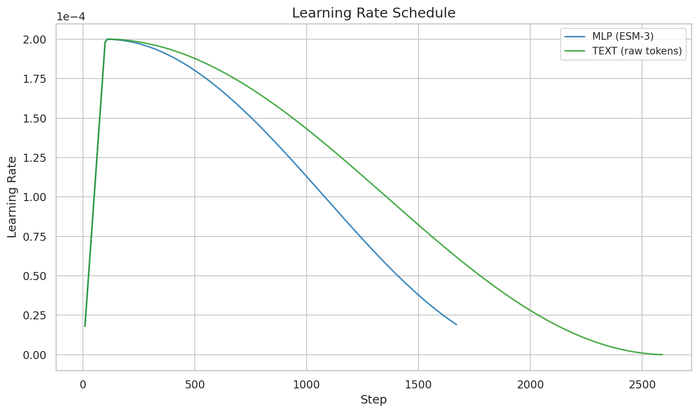
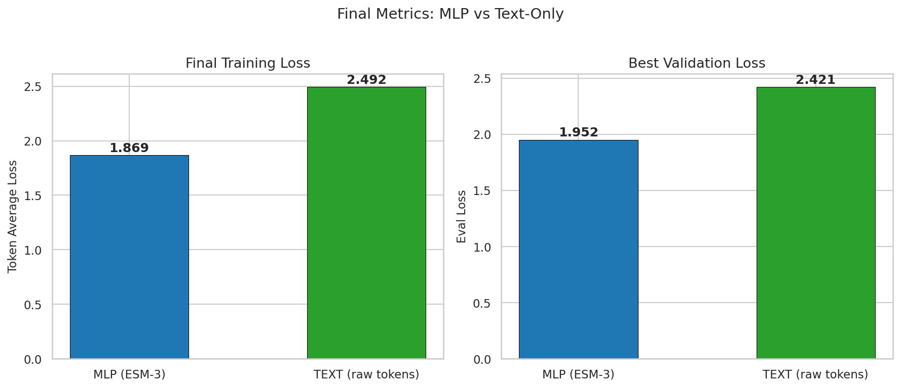

One of the central questions in this project is whether feeding protein embeddings from a pretrained encoder (ESM-3) into the LLM is worth the added complexity — or whether raw amino acid text tokens are sufficient. We now have completed runs for both approaches on the same Qwen3-8B backbone, same dataset, same learning rate. This post compares them head-to-head.
The short answer: ESM-3 + MLP projector reaches a final token_avg_loss of 1.87 vs 2.49 for text-only — a 25% reduction. Validation loss tells the same story: 1.95 vs 2.42 (19% lower). The protein encoder provides substantial signal that character-level tokenization cannot recover.
Experiment Setup
Both runs share the same base configuration:
| Parameter | MLP (ESM-3) | Text-Only |
|---|---|---|
| Approach | esm3 — ESM-3 small (frozen) → AttentionPooling (32 tokens) → MLP (1536→5120→2560) → Qwen3-8B |
text — raw amino acid sequence as <protein>MKTL...</protein> tokens → Qwen3-8B |
| Base LLM | Qwen/Qwen3-8B (LoRA r=8, all linear layers) | Same |
| Base LR | 2e-4 | 2e-4 |
| Projector LR | 1e-3 (5x base) | N/A |
| Dataset | Mol-Instructions | Mol-Instructions |
| Total steps | 1,677 | 2,595 |
| Training time | 11.0 hours | 15.4 hours |
| GPU memory (peak) | 44.2 GB | 42.8 GB |
The MLP run (sft_lora_esm3_qwen3_8b_it_0226_151416) trained for fewer steps because it processes protein sequences through the encoder in a separate sub-batch rather than expanding them into long token sequences. The text-only run (sft_text_qwen3_8b_it_0227_145821) converts each protein into 200–800 text tokens that occupy space in the LLM's context window.
Training Loss
The loss metric plotted here is token_avg_loss — the true per-token cross-entropy averaged over each logging step. This is distinct from HuggingFace Trainer's loss field, which reports a running average that is heavily inflated by the high initial losses and takes thousands of steps to wash out. (We learned this the hard way — see the 02-24 post for the full story.)

Both approaches start high and drop steeply in the first ~200 steps as the warmup phase completes and the model locks onto the training distribution. After that initial plunge:
- MLP continues a gradual descent from ~2.5 at step 200 to 1.87 at step 1,677, with steady improvement throughout.
- Text-only follows a similar shape but at a higher floor, settling from ~3.0 at step 200 to 2.49 at step 2,595.
The gap between the two curves is visible from step 50 onward and never closes. At every comparable point in training, MLP runs ~0.5–0.6 loss units lower.
Validation Loss
Eval loss was computed every 250 steps on a held-out subset:

The MLP curve reaches its best eval_loss of 1.952 at step 1,500 (the final eval checkpoint). It's still trending downward — we likely left performance on the table by not training longer. The text-only run hits 2.421 at step 2,500, also still decreasing at the end.
The 19% gap in eval loss (1.95 vs 2.42) is slightly smaller than the 25% gap in training loss, which is expected: the encoder's advantage is partly in memorizing training-set protein structures, with some of that advantage being less transferable to unseen proteins. Still, 19% is substantial.
Gradient Dynamics
Gradient norms reveal a notable difference in early training behavior:

MLP shows larger early gradients — peaking at 6.9 in the first 40 steps vs 4.1 for text-only. This makes sense: the randomly-initialized attention pooling and MLP projector layers start far from a useful projection, producing large error signals as they learn to map ESM-3's 1536-dim embedding space into the LLM's 2560-dim input. By step ~200, both approaches settle into comparable gradient ranges (0.5–2.0).
Text-only has periodic gradient spikes around steps 800–1,200. These coincide with regions where the learning rate schedule is decaying — possibly reflecting harder training examples that produce outsized gradients when the effective step size is smaller. The spikes are mild (within 3σ of the mean) and don't disrupt convergence.
Both runs use the multimodal gradient clipping fix introduced after the NaN incident on 02-23, which clips pooling and projector gradients independently from the LLM.
Learning Rate Schedule
Both experiments use the same base LR of 2e-4 with warmup:

The MLP run uses a differential projector LR of 1e-3 (5x base), applied to the attention pooling and MLP projector parameters. This doesn't appear on the logged LR — Trainer logs only the base group — but it's visible in its effect: the projector converges quickly (gradient norms drop by 3x in 100 steps).
Final Metrics

| Metric | MLP (ESM-3) | Text-Only | Delta |
|---|---|---|---|
| Final token_avg_loss | 1.869 | 2.492 | -25.0% |
| Best eval_loss | 1.952 | 2.421 | -19.4% |
| Best eval step | 1,500 | 2,500 | — |
| Convergence step | 180 | 180 | Same |
| Max gradient norm | 6.92 | 4.12 | +68% |
| Mean gradient norm | 1.30 | 0.79 | +65% |
| Peak GPU memory | 44.2 GB | 42.8 GB | +1.4 GB |
| Training time | 11.0h | 15.4h | -4.4h |
The MLP approach wins on loss by a wide margin and is actually faster to train despite the additional encoder forward pass. The GPU memory overhead is minimal (+1.4 GB, 3.3%) because ESM-3 runs in its own sub-batch with autocast to bfloat16.
Why Does the Encoder Help This Much?
A 25% loss reduction is a large effect. Three factors likely contribute:
-
Structural information. ESM-3 has been trained on millions of protein structures and sequences. Its 1536-dim embeddings encode secondary structure, evolutionary conservation, and functional motifs that would take billions of text tokens for the LLM to infer on its own. The attention pooling compresses this into 32 tokens — a dense information capsule that the MLP projector maps into the LLM's working space.
-
Shorter effective sequences. MLP represents a 400 AA protein as 32 pooled tokens. Text-only represents it as ~400 text tokens (one per amino acid, plus boundary tokens). The LLM's attention mechanism works over a much shorter context in the MLP case, focusing capacity on the instruction-following task rather than raw sequence processing.
-
Pretrained representations vs learning from scratch. The text-only model must learn protein biology purely from the 50K instruction-response pairs in Mol-Instructions. The MLP model gets ESM-3's representations for free (frozen encoder), and only needs to learn the mapping from embedding space to language generation.
What's Next
- Train MLP longer. The eval curve is still decreasing at step 1,677. An extended run to 3,000+ steps should improve further.
- Perceiver Resampler. The third leg of the three-way comparison — replacing attention pooling + MLP with a PerceiverResampler (~29M params vs ~30M for MLP) — hasn't been trained yet. This will test whether cross-attention over ESM-3 features beats the fixed pooling approach.
- Downstream evaluation. Loss is a proxy. We need GO prediction, PPI, and stability benchmarks on both checkpoints to confirm the loss advantage translates to task performance.
- Scale to the combined dataset. These runs used the 50K Mol-Instructions subset. The combined 4.5M-record dataset (see 02-25 post) should amplify both approaches — the question is whether the MLP advantage holds or narrows with more data.
Analysis code and data: blog/data/03-02/